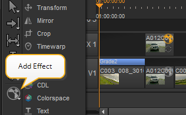
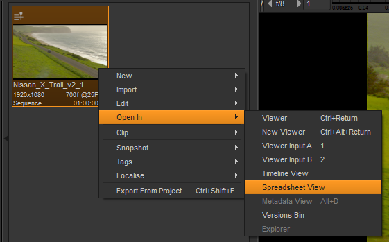
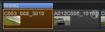
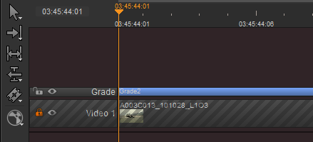
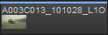
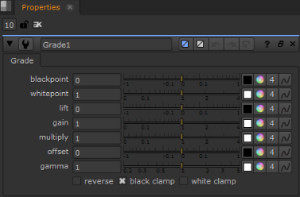
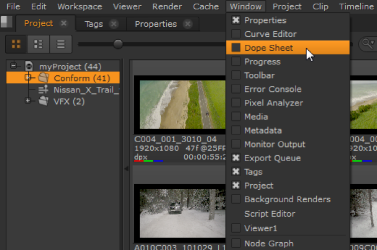

您可以在任何工作区中将软效果添加到时间轴。软效果是一种实时效果，在 GPU 上处理，而不是 CPU。
您还可以添加自定义插件或发明柔和的效果, 添加效果 菜单使用 Python。有一些关于有效自定义软效果的规则，比如它们必须有 GPUEngine 实现，并且必须在创建后注册。如何将插件或 gizmo 注册为自定义软效果的示例位于:
<Install_directory>/pythonextensions/site-packages/hiero/examples/custom_soft_effect.py
请参阅 帮助 > 文档 欲了解更多信息。
下面是可用软效果的简要总结。这些类似于中的工具
Nuke
的节点图。看到的
注意: 创建 Comp 和 创建 Comp Special 不是软效果。
|
软效果 |
摘要 |
|
变换 |
允许您从单个控制面板平移、旋转、缩放和倾斜剪辑实例。 |
|
镜子 |
允许您围绕格式区域的中心翻转输入图像。X 轴上的翻转垂直镜像图像。Y 轴上的翻牌操作水平镜像图像。 |
|
作物 |
允许您剪切图像区域中不需要的部分。您可以用黑色填充裁剪部分，或者调整图像输出格式以匹配裁剪的图像。 |
|
时间扭曲 |
允许您在剪辑中减慢、加快甚至反转选定的帧，而不必改变其总长度。 警告: 时间扭曲效果仅允许在包含剪辑的轨道上，因为它们链接到剪辑。 |
|
年级 |
允许您通过从查看器中采样像素来定义白色和黑色点。例如，您可以使用它来匹配前景板和背景板。 |
|
LUT |
允许您使用 OpenColorIO 库从文件 (通常是 1D 或 3D LUT) 加载颜色空间转换并应用它。您还可以加载其他基于文件的转换，例如 ASC ColorCorrection XML。 |
|
CDL |
允许您根据 OpenColorIO 库应用 ASC CDL (美国电影摄影师协会颜色决定列表) 等级。有关更多信息，请参见 http://opencolorio.org |
|
色彩空间 |
允许您将图像从一个颜色空间转换到另一个颜色空间，例如从 Nuke 的本地颜色空间转换到更适合给定过程或预期显示设备的其他颜色空间。这支持 RGB 、 HSV 、 YUV 、 CIE 和 CMS 格式 (以及各种子格式)。它可以根据不同的初选、白点和不同的编码进行调整。 |
|
ColorCorrect |
允许您快速调整饱和度、对比度、伽马、增益和偏移。您可以将这些应用到剪辑的主色调 (整个色调范围) 、阴影、中间色调或高光。 您可以使用上的查找曲线控制被认为位于阴影、中间色调和高光中的图像的范围 范围 标签。但是，不要调整中间色调曲线-中间色调始终等于 1 减去其他两条曲线。 |
|
文本 |
允许您在图像上添加文本覆盖。您可以简单地键入要显示的文本或使用 Tcl 表达式 (如 [元数据值] ) 或 Tcl 变量来创建文本覆盖。还可以使用 “组” 选项卡中的动画层对文本覆盖设置动画，以便它们的属性 (如位置、大小和颜色) 随时间而变化。 |
|
烧入 |
允许您在时间轴上快速添加标准烧入元素。 您可以控制颜色、不透明度、字体、比例等，以及使用下拉列表来确定从文件或序列元数据中添加的元素。 您还可以从剪辑实例引用自定义元数据。例如: Hiero/标签/批准 提取 批准 来自剪辑实例的标记。您也可以附加 注意 要包括与标记关联的任何注释: Hiero/tags/Approved/note 注意: 必须在标记名称中的空格和斜杠前面加上 \ \ (反斜杠) 才能启用 Nuke 工作室 正确处理标记名称。例如: Hiero/tags/Blue \ \ Screen/note 您还可以添加老化的 出口 对话框，请参见 将刻录文本添加到导出中 欲了解更多信息。 |
|
ChromaKeyer |
允许你从你的镜头的绿色或蓝屏区域拉一个快速的色度键。 使用 屏幕颜色 选择器从选择颜色 源 输入用作蓝色/绿色屏幕颜色。要从前景对象中删除蓝色/绿色溢出，请使用 绝望 控制从源拾取肤色。使用 哑光 参数来提高哑光。 |
|
BlinkScript |
允许您在时间轴上运行 Foundry 的 Blink 框架，使您能够编写一次代码并在任何受支持的设备上运行。 警告: BlinkScript 非常灵活，因为在内核中可以编写的代码没有限制。因此，从内核源代码编辑的代码可能会导致 Nuke 崩溃，所以请小心! BlinkScript 软效果支持完整 BlinkScript 节点中可用的功能的子集: • 您不能将内核发布到组或小控件。 • 由于软效果堆的处理方式 Nuke 工作室 ,BlinkScript 软效果只包含一个输入源，只产生一个输出。 • 目前，BlinkScript 软效果只支持 eAccessPoint 数据访问，这意味着一次只能访问输入中的一个点，并且只能写入输出中的一个点, 对于每个迭代位置。 • BlinkScript 效果不支持以下函数: • Log10 • 圆形 • Rsqrt • 整数类型的 abs • Modf (a，* b) • 标志 • Rcp • 整数类型的 max 、 min 和 clamp • 中位数，atomicInc 和 atomicAdd。 • BlinkScript 效果支持的唯一数据类型是 Int , 浮动 ,和 布尔 . 注意: BlinkScript 软效果同时支持 像素化 和 组件方面 内核，但出于性能原因，前者是首选。有关此的更多信息和该语言的更详细描述，请参见 Http://docs.thefoundry.co.uk/nuke/100/BlinkKernels/ |
警告:
请记住以下几点:
序列级软效果只允许在与剪辑相同的轨道上，如果它们被修剪以完全匹配单个剪辑的输入和输出点。在这种情况下，每个效果都链接到一个特定的剪辑。
软效果可以任意修剪，如果它们在没有剪辑的轨道上。
除了使用电子表格视图添加软效果 (请参见下一节)，时间线还提供了一些添加软效果的其他方法。您可以:
• 在时间轴上右键单击剪辑实例，选择 影响 然后选择要应用的软效果。
OR
• 在时间轴上选择剪辑实例，单击 添加效果 时间线左侧的按钮 (请参见截图)，然后选择要应用的软效果。

注意: 通过先选择所需的剪辑实例，然后在其中一个实例上单击鼠标右键并选择要添加的软效果，可以将软效果添加到多个剪辑实例中。将软效果添加到每个选定的剪辑实例。您还可以通过右击轨道标题，然后选择要添加的软效果，为整个轨道添加单个软效果。
注意: 时间扭曲效果只允许在带有剪辑 (因此链接到剪辑) 的轨道上。
通过执行以下操作，可以在任何工作空间中使用电子表格视图添加软效果:
| 1。 | 要在任何工作区中打开电子表格视图，请选择 窗口 > 新建电子表格视图 . |
| 2. | 在 bin 视图中的序列上单击鼠标右键。 |
这将打开一个上下文菜单。
| 3. | 如果上下文菜单中尚未填充电子表格视图，请选择 打开 > 电子表格视图 . |

这将加载之前打开的电子表格视图中的序列。
| 4. | 在电子表格视图的列表中右键单击事件，然后选择 影响 打开所有可用软效果的列表。 |
注意: 创建 Comp 和 创建 Comp Special 是唯一的项目 影响 不是软效果的列表。
| 5. | 从中选择所需的软效果 影响 列表。 |
然后，序列级软效果显示在剪辑实例上方，并进行颜色协调。例如，如果效果在时间轴上以蓝色/紫色显示，则相应的效果属性将在 属性 窗格。

插入软效果时，其属性面板将自动打开。如果打开它，“效果属性” 面板将显示在 属性 窗格。如果 属性 窗格未打开，效果的 “属性” 面板显示为浮动对话框。
警告: 在剪辑级别添加的软效果，必须与锁定轨迹上的剪辑实例的长度相匹配。修剪到剪辑实例末端以外的任何软效果，或与剪辑实例不同的长度，都将用红色散列标记，以显示其无效。
通过执行以下操作，可以在时间轴上添加剪辑级软效果:
| 1。 | 在要向其添加软效果的剪辑实例或 bin 剪辑上单击鼠标右键。 |
| 2. | 选择 打开 > 时间线视图 . |
| 3. | 单击 影响 菜单图标并选择要应用的软效果。例如，您可以选择 年级 . |
然后，软效果将作为彩色框显示在剪辑实例上方。

关闭剪辑实例的时间线视图时 (因为它是剪辑级软效果)，软效果将显示为剪辑实例顶部的彩色线。显示的线条颜色反映添加到剪辑实例的最高柔和效果。

添加效果显示相关的管制 属性 面板，类似于 Nuke 节点。调整控件会实时影响效果下的剪辑实例。例如，在序列级别添加等级效果将在 属性 面板。

请参阅
如果要使用关键帧制作动画软效果控件，可以使用曲线编辑器和摄影表来微调输出。要将曲线编辑器或摄影表添加到界面，请导航到 窗口 并选择所需面板。

请参阅
您可以复制、移动和剪切软效果，就像在时间轴中使用剪辑实例一样。您可以通过从访问这些操作来执行这些操作 编辑 在右击菜单中，或使用键盘快捷键。您可以将软效果复制到不同的轨道和不同的序列，但不能复制到不同的项目。
只需单击并将软效果拖动到不同的剪辑实例，甚至拖动到不同的视频轨道，即可移动序列级软效果。
Nuke 工作室 允许您将序列级软效果复制到原始序列之上，以创建堆栈、到不同的轨迹或到不同的序列。也可以将序列级软效果复制到时间轴视图中打开的剪辑实例，因此将其粘贴为剪辑级软效果。可以通过执行以下操作复制软效果:
| 1。 | 通过单击要复制的软效果来选择它。 |
| 2. | 选择 编辑 > 复制 (或 Ctrl / Cmd + C )。 |
| 3. | 将播放头移动到要粘贴副本的位置。 |
| 4. | 选择 编辑 > 粘贴 (或 Ctrl / Cmd + V )。 |
Nuke 工作室 允许您克隆序列级软效果。这将复制软效果并将其链接到原始效果，这意味着当其中一个被编辑时，更改会反映在另一个中。您可以将软效果克隆到不同的轨道，甚至是不同的序列。不能在不同的项目中克隆软效果。
要克隆软效果:
| 1。 | 通过单击选择要克隆的软效果。 |
| 2. | 选择 编辑 > 复制 (或按 Ctrl / Cmd + C )。 |
| 3. | 将时间轴上的播放头移动到要放置新克隆的位置。 |
| 4. | 选择 编辑 > 克隆 (或按 Alt + K )。 |
新克隆被放置在时间轴上的当前播放头位置。您可以重复步骤 3 和 4，在时间轴上的不同位置创建所有链接的多个克隆。
克隆由 a 表示 C 在软效果的左侧以红色突出显示。
注意: 不支持在软效果中克隆动画。
也可以将序列级软效果复制为克隆。这意味着，当您将软效果的新副本粘贴到选定的剪辑实例上方时，它会自动链接到原始软效果作为克隆。因此，对任一克隆软效果所做的任何更改都将反映在另一克隆软效果中。
要将软效果复制为克隆，请执行以下操作:
| 1。 | 通过单击选择要复制为克隆的软效果。 |
| 2. | 选择 编辑 > 复制为克隆 (或按 Ctrl / Cmd + K )。 |
| 3. | 单击要将软效果克隆到的剪辑实例。 |
| 4. | 选择 编辑 > 粘贴 (或按 Ctrl / Cmd + V )。 |
软效果将作为选定剪辑实例的克隆进行复制。可以重复步骤 3 和 4 创建多个克隆，这些克隆都链接在不同的选定剪辑实例之上。
Clones are indicated by a C highlighted in red in the left of the soft effect.
NOTE: Cloning animation in soft effects is not supported.
要获得软效果，只需点击你想要的克隆并选择 编辑 > Declone (或按 Alt 转变 K )。
注意: 有关复制、移动和剪切软效果的更多信息，请参见 时间线编辑工具 .
要删除软效果，只需右键单击它并选择 编辑 > 删除 (或按 退格 )。
要编辑剪辑级软效果，首先需要在时间轴视图中打开具有应用软效果的剪辑实例。您可以通过右击剪辑实例并选择 打开 > 时间线视图 。然后，您可以复制、删除或移动剪辑级软效果，其方式与序列级软效果完全相同。
可以将剪辑级软效果复制并粘贴到原始效果的顶部，从而在时间轴视图中创建堆栈。关闭时间轴视图时，堆叠剪辑级软效果将在剪辑实例的顶部显示为一条线。 Nuke 工作室 允许您复制剪辑级软效果，返回到完整序列，然后将其粘贴为序列级软效果。也可以将剪辑级软效果粘贴到时间轴视图中打开的另一个剪辑实例。
注意: 不能克隆剪辑级软效果。
您可以选择从输出中禁用和重新启用软效果。要启用或禁用序列级软效果，请单击彩色框，然后按键选择软效果 D 。要启用或禁用剪辑级软效果，首先需要在时间轴视图中打开剪辑实例 (包括软效果)。然后您可以选择软效果并按 D .
|
|